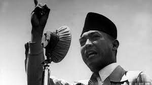

Foto kenangan Bung karno


Biografi Singkat Bapak Proklamator Indonesia,Ir.Soekarno

Soekarno mrupakan putra dari Raden Soekemi Sosrodihardjo dan Ida Ayu Nyoman Rai.Ibunda Bungkrno merupakan bangsawan Bali. kedua orang tua Soekarno bertemu saat sang ayah menjadi guru di Bali.Soekrno hanya sebentar tinggal dengan kedua orangtuanya di Blitr.kemudian beliau pindah ke surabaya untuk menamatkan SD.selama di surabaya,bung karno tinggal di kediaman Haji Oemar Said Tjokroaminoto.setelah tamat,bung karno melanjutkan pendidikan di HBS (Hoogere Burger School) Lulus tahun 1920,Soekarno melanjutkan pendidikan di THS (technische Hoogeschool) di Bandung. THS ini merupakan cikal bakal Institut Teknologi Bandung.Soekarno lulus pada 25 mei 1926 dan mendapat gelar "Ir". Setelah lulus,Soekarno mendirikan Biro Insinyur bersama dengan Ir.Anwari tahun 1926.Selama di Bandug,bung karno aktif dalam banyak organisasi.Beliau juga mendirikan partai Nasional Indonesia pada 4 Juli 1927.PNI aalah partai yang bertujuan untuk memerdekakan bangsa Indonesia.karena tujuan inilah Soekarno di penjara pada 29 Desember 1929.Bung karno kemudian berulang kali,di penjara karena beliau tetap teguh memperjuangkan kemerdekaan Indinesia.Perjuangan Soekarno cukup panjang sebelum akhirnya mampu menyatakan kemerdekaan Indonesia.Tepat pada tanggal 17 Agustus 1945,bersama Mohammad Hatta dan beberapa tokoh lainnya,beliau menyatakan kemerdekaan bangsa.Dilansir dari laman RRI,Soekarno sebelumnya sudah mengemukakan dasar negara,pancasila,pada sidang BPUPKI 1 Juni 1945.Dasar ini kemudian menjdi dasar negara Indnesia.Kiprah Bung Karno tidak berhenti di lingkup negara Indonesia saja.Bung Karno tercatat berusaha menghimpun bangsa-bangsa untuk membuat Gerakan Non Blok.Gerakan ini beranggotakan bangsa-bangsa di Asia,Afrika,dan Ameria Latin.Gerakan ini nmerupakan hasil dari konverensi Asia Afrika pada 1955 di bandung.Bersumber dari laman kepustakaan presiden-presiden Republik Indonesia,Bung Karno memiliki 3 orang istri selama hidupnya.Dari ketiga istrinya,Soekarno di karuniai 8 orang anak.Fatmawati,istri pertama Bung Karno, melahirkan Guntur,Megawati,Rachmawati,Sukmawati dan Guruh.Taufan dan Bayu adalah putra Soekarno dari Hartini.Ratna Sari Dewi istri Soekarno berdarah Jepang,memiliki anak bernama Karika.Bung Karno menyerahkan jabatannya sebagai presiden Indonesia setelah terjadi gejolak politik.Gejolak ini disebabkan oleh pemberontakan G-30-S/PKI yang menewaskan banyak perwira TNI. Soekarno wafat di RSPAD tanggal 21 Juni 1970 karena sakit yang terus memburuk.Beliau dimakamkam di Blitar,dekat dengan makam sang ibunda,Ida Ayu Nyoman Rai.